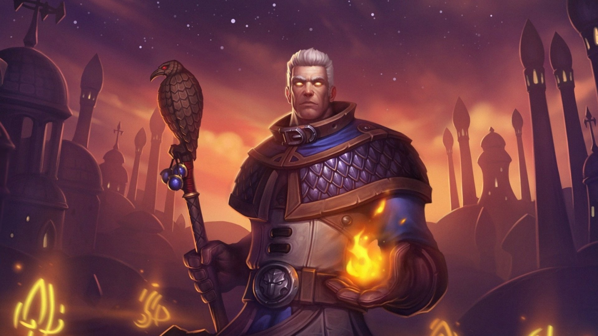
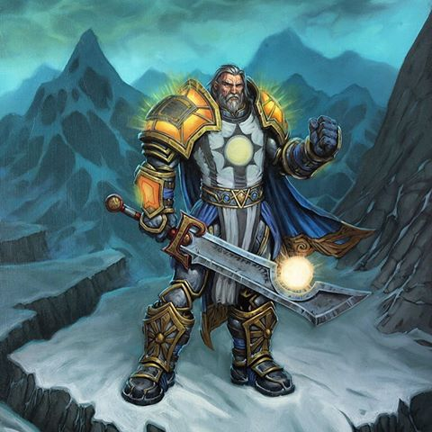

Jaina Proudmore
Jaina tem todas as características de um gênio rebelde. Está sempre contestando as regras e agindo de acordo com os seus instintos. Para a sorte de Azeroth, é comum que seus instintos estejam certos.

Hadggar
Nenhum dos cinco magos se preocupa tanto com Azeroth quanto Hadggar. Na Segunda Guerra selou o portal para Draenor (Dark Portal), derrotou o Ogro e Warlock Dentarg e enfrentou e conseguiu sobreviver ao confronto contra o dragão Asa da Morte.

Tirion Fordring
Ele foi um dos cinco primeiros Cavaleiros da Mão de Prata selecionados pelo arcebispo Alonsus Faol e foi um dos grandes heróis da Segunda Guerra.Mais tarde se tornou lorde da Fortaleza de Mardenholde em Hearthglen antes de ter seu título retirado e ser exilado por defender um orc chamado Eitrigg.